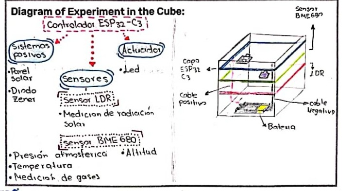

Cube Space
Cubes in Space es un programa educativo internacional que permite a estudiantes diseñar pequeños experimentos dentro de cubos y enviarlos a vuelos espaciales o a globos científicos asociados con NASA.
Logo
En este proyecto participé en una actividad de Cubes in Space, una iniciativa internacional que invita a estudiantes a diseñar y enviar experimentos al espacio. Como parte del proceso creativo, se realizó una competencia interna para crear un logo oficial que representara a la compañía o al programa.

Cube
En este proyecto el propósito del cubo era medir diferentes variables ambientales con el fin de analizar cómo cambian las condiciones atmosféricas a medida que aumenta la altitud. Para lograrlo, se integró un conjunto de sensores y componentes electrónicos dentro de un volumen reducido, cumpliendo con las restricciones de peso y tamaño del programa.
